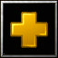

Skill Order
- 


Anubarak
Anubarak was once the greatest champions of the Nerubians, but fell in the Second War of the Spiders. He was resurrected by the Lich King Nerzhul, who promised him eternal undeath in exchange for his unswerving loyalty. When threatened, he shoots spikes through enemies maiming and disorienting negetive energy and those who witness him bleeding into the shadows of the frozen tundra have never lived to tell the tale.
Strength: 18 + 2.0
Agility: 19 + 2.2
Intelligence: 18 + 2.1
Learns Impale, Mana Burn, Spiked Carapace and Vendetta.
Attack range of 128(melee)
Movement speed of 300